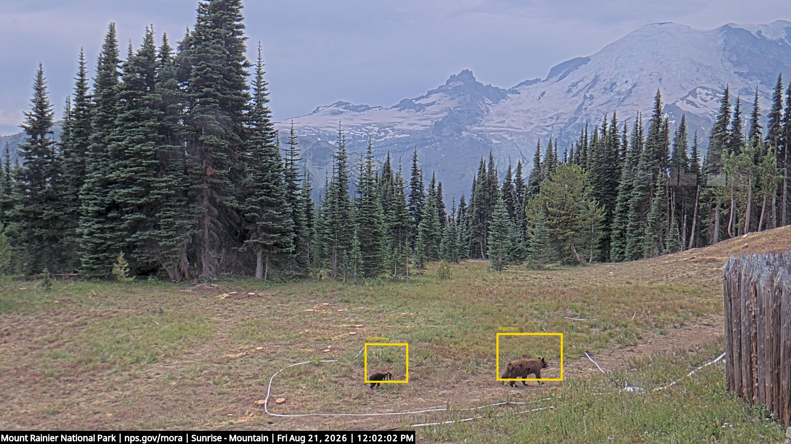

Black bears at Sunrise Mountain
A larger bear and smaller bear are visible together in the lower meadow on 2026-08-21 after source-window review.
- Source
- NPS Sunrise Mountain webcam
- Evidence
- annotated full frame plus neighboring frame sequence